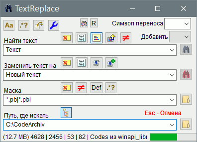
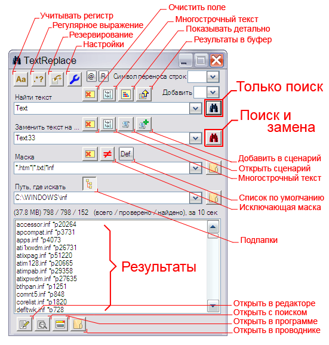

AutoIt3
TextReplace
Назначение
Поиск и замена текста в файлах.


Взаимосвязанные
TextReplaceПараметры поиска
По умолчанию в режиме поиска и замены регистр букв не учитывается. При использовании регулярного выражения этот параметр не влияет на результат, а чувствительность к регистру в этом случае устанавливается в самом регулярном выражении в виде (?i) перед шаблоном поиска.
По умолчанию режим регулярного выражения отключен, то есть поиск и замена текста выполняется как обычно. Регулярное выражение позволяет найти/заменить текст по особым правилам.
Кодировка определяет, в каком режиме будет открыт файл для обработки. По умолчанию режим Auto, что означает проверку кодировки файла перед открытием и сохранением файла. В ANSI один символ приходится на 1 байт, в UTF8 эта величина может разниться от 2 до 6 байтов на символ. То есть если выполнять поиск в режиме UTF, то текст не будет найден в файлах в кодировке ANSI. Откройте в редакторе Notepad++ текстовый файл с русскими символами и попробуйте переключить кодировку, чтобы видеть эффект. UTF предназначен для многоязычной поддержки, чтобы текст любого языка отображался вне зависимости от выбора кодовой страницы и для поддержки китайских и японских иероглифов, которых в алфавите может быть несколько тысяч и их невозможно уместить в ANSI кодировке вмещающей 256 символов (от 00 до FF). В кодировке UTF16 - один символ на 2 байта, "Big Endian" - старшими байтами вперёд, "Little Endian" - младшими байтами вперёд
Бинарный режим позволяет открывать файл в бинарном режиме заменять бинарные данные.
Рекомендуется режим Auto, при котором кодировка файла определяется автоматически и после замены файл сохраняется в той же кодировке. При выборе определённой кодировки файлы не соответствующие этой кодировки будут игнорироваться. Например, если поиск выполняется с выбором кодировки UTF-8 (+BOM), то файлы в кодировке ANSI, UTF16 и UTF-8 (-BOM) будут игнорироваться.
Маска определяет допустимые файлы поиска по имени. Символ * - подразумевает любое множество или отсутствие символов, знак вопроса ? - подразумевает один любой символ, разделитель | позволяет перечислить несколько масок поиска, например *.is?|s*.cp*. Неправильная маска предотвращает начало поиска, например, если в маске запрещённые символы. Если требуется конкретные имена файлов, то их следует перечислить через разделитель. Авто-коррекция маски позволяет исправить ошибки ввода, например пробел или точка в конце любого элемента маски игнорируются; ** тоже что и *
При включении регулярного выражения в маске, она не проверяется на ошибки и позволяет более избирательно задавать маску, например:
\d+\.[a-z]{1,3} - файлы, в именах которых только цифры
\D+\.[a-z]{1,3} - файлы, в именах которых нет цифр
[а-яёА-ЯЁ\h]+\.[a-z]{1,3} - файлы, в именах которых только русские буквы и пробел
[^а-яёА-ЯЁ]+\.[a-z]{1,3} - файлы, в именах которых нет русских букв
\H+\.[a-z]{1,3} - файлы, в именах которых нет пробела
\H+\.htm - файлы HTM, в именах которых нет пробела
\.[a-z]{1,3} - часть маски определяющая расширение файла (с точкой), то есть состоит из букв от "a" до "z" в количестве от 1 до 3-х
Не используйте в маске символы начала и конца ^$\A\Z\z, так как они уже указаны в итоговом рег.выр., а заданная часть вставляется в итоговый.
Этот параметр инвертирует маску, то есть происходит поиск всех файлов, кроме указанных в маске.
Параметр позволяет искать файлы либо только в корне указанной папки, либо во всех вложенных каталогах.
По умолчанию отключено. Параметр позволяет перед заменой сделать резервные копии файлов, в которых выполнялась замена текста. Если параметр включен, то программа не выполнит замену пока не будут созданы условия для создания резервных копий, то есть при неверно указанном пути или не существовании указанного диска или отсутствия доступа к записи на диск будет выдано предупреждение. По умолчанию, если не указан каталог, то резервные копии создаются в каталоге программы в папке Backup. Имя каждого нового каталога генерируется на основе текущего времени и имени папки, в которой происходит поиск. При создании резервных копий сохраняется структура каталогов.
По умолчанию для замены в файлах "Только для чтения", "Системных" и "Скрытых" перед заменой снимаются указанные атрибуты и восстанавливаются вновь после замены. То есть после замены каждый файл имеет те же атрибуты, что и до замены. Но если указать любой из этих файлов как игнорируемые, то программа не будет выполнять замены в этих файлах
Если включен этот параметр, то перед заменой копируется дата изменения файла, а после замены восстанавливается. Это полезно, если версия файла определяется датой.
Этот параметр введён в связи с невозможностью успешно завершить поиск/замену при возникновении ошибки "Error allocating memory." - Ошибка выделения памяти, возникающей при открытии файла размером более ~190 Мб. В бинарном режиме этот параметр можно увеличить до ~350 Мб. Кроме того этот параметр можно использовать в личных целях для ограничения результатов поиска по размеру файла, тем самым ускорить поиск
Эта опция не является параметром ком-строки или сценария, но имеет важное значение в режиме поиска. Кнопка вывода результата в режиме поиска позволяет отображать все найденные искомые образцы в каждом файле, а не только проверка наличия первого совпадения. В результатах возвращается строка с добавлением 40 символов до и после найденного образца. Иногда это работает медленнее, но только при множестве файлов, большого количества совпадений и с использованием регулярных выражений. Поэтому режим вывода результата рекомендуется. Результат выводится при клике на пункте списка (используйте "стрелка вниз" для удобного просмотра), при клике на том же пункте повторно вывод результата отключается/включается, это сделано для удобства управления. Отключение кнопкой - принудительно отключает результаты, несмотря на то, что они есть. При поиске с отключенными результатами выполняется только проверка первого совпадения и для текущих результатов не будет возможности включить просмотр результатов. При использовании регулярного выражения результат в первой строке содержит найденный образец, во второй - строка с найденным образцом.
Кнопка "Просмотр результатов поиска" позволяет интерактивно просматривать результаты с подсветкой найденных текстов. С возможностью перехода к следующему файлу или выполнить прыжок к файлу выбранному в раскрывающемся списке.
Если отключено, то в списке вывода результатов вместо количества найденных будет указана позиция найденного образца. Для регулярных выражений вывод позиции отключен ради экономии времени поиска.
Кнопки позволяют легко открыть выбранный файл в редакторе, в проводнике, запустить файл, скопировать список результатов. В версии 1.1 добавлена возможность сохранить список результатов поиска в файл и использовать его как список поиска. То есть поиск или замена будет осуществляться только в файлах, которые содержит этот список. Это позволяет более избирательно выполнять обработку, используя результаты предварительного поиска, а также использовать файлы с различных дисков. Список может быть в Юникоде.
Допустим в некоторых файлах есть некий текст, который должен быть во всех файлах, но этого нет. Например в веб-файлах был изменён заголовок методом поиска и замены, и обнаружилось, что из 200 файлов поиск происходит только для 195 файлов. Вычислять 5 остальных вручную неудобно, здесь и пригодится инвертированный поиск.
Поиск и замена многострочного текста
Для облегчённой вставки текста служат две кнопки вставки многострочного текста, одна для случая поиска, вторая для поиска и замены. При вставке в раскрывающийся список символ переноса строки подменяется определёнными символами, это позволяет сохранить текст в истории раскрывающегося списка и выбрать его при следующем запуске программы. В дальнейшем при использовании истории необходимо выбрать этот символ переноса строки. При вставке многострочного текста с помощью кнопок - символ определяется автоматически.
Подстановочный символ переноса строк позволяет использовать перенос строки в однострочном раскрывающемся списке.
Перенос строки в Windows состоит из двух символов CR и LF. Одиночный символ используется в UNIX (LF) и MAC (CR). Иногда в Windows могут встретится файлы, в которых одиночный символ CR или LF является переносом строки. В качестве подстановочного символа переноса строки следует выбрать символ, которого нет в шаблонах поиска и замены. Выбранный символ можно использовать в полях поиска и замены в качестве переноса строки. Программа просто заменит этот символ на перенос строки перед началом обработки файлов. При использовании двойного символа, например ~| происходит подмена символов CR и LF индивидуально для каждого, в случае, если в тексте перенос строки осуществляется одним символом. Использование двойного одинакового символа, например ~~ заменяется на одинарный и обрабатывается как ~, поэтому не имеет смысла. Это также работает и в регулярных выражениях
При выборе подстановочного символа переноса строки следует учитывать только отсутствие этого символа в полях поиска и замены. Это не значит, что выбор подстановочного символа каким то образом будет влиять на поиск и замену в файлах, содержащих этот символ.
Сценарии замены
Сценарий замены предназначен для многократной замены в файлах
Операция заключается в считывании текущих настроек программы для создания командной строки сценария. При сохранении либо создаётся новый файл, либо командная строка добавляется в конец выбранного файла.
Командная строка сценария состоит из 13 параметров
1 - шаблон поиска
2 - шаблон замены
3 - учитывать регистр букв
4 - регулярное выражение
5 - символ переноса строки
6 - резервные копии
7 - путь
8 - маска
9 - исключение
10 - вложенные каталоги
11 - восстанавливать дату изменения
12 - игнорирование атрибутов
13 - кодировка
Параметр "резервные копии" имеет 3 значения
0 - нет
1 - да, каталог по умолчанию
путь - да, в указанный путь (если указан в настройках)
Командная строка содержит параметры разделённые комбинацией символов }—•—{ и с указанием начала командной строки -->| и конца |>-- смотрите готовые примеры. Каждая командная строка сценария состоит строго из 13 параметров и начинается с новой строки и заканчивается переносом строки. Любое несоответствие игнорируется. Это значит вы можете оставлять комментарии между командными строками, а в параметрах поиска и замены использовать многострочный текст. Перед использованием сценария происходит предварительный просмотр, поэтому ошибки ручной правки сценария можно увидеть предварительным просмотром. Некоторые параметры имеют два значения 0 или 1, что равносильно "Нет" и "Да".
Если сделать резервные копии невозможно, то будет выдано предупреждение. Если хотя бы один путь поиска из указанных в сценарии не существует, то будет выдано предупреждение. Это предотвращает начало обработки, если одна из команд спровоцирует остановку сценария на одной из команд сценария.
Всвязи с добавлением рег.выр. в маску, сценарии пока не поддерживают это, так как внесение дополнительного параметра разрушит предыдущие сценарии.
Экономичный режим заключается в обработке файлов за один проход. Эконом режим включается, если в сценарии одинаковы путь, маска, исключения, уровень вложения, атрибуты, кодировка. В эконом. режиме файл открывается один раз и в цикле производятся все замены, в противоположность полному режиму, где один и тот же файл может открыться более одного раза для однократной замены. Эконом режим может значительно увеличить скорость операции при обработке одних и тех же файлов по сценарию.
Эконом режим не включается на участке сценария, он применяется ко всему сценарию. Если хотя бы одна команда противоречит экономному режиму, то весь сценарий обрабатывается в полном режиме. В экономном режиме обработки сценария в строке состояния указывается "Econ".
В режиме обработки сценария строка состояния показывают информацию обработки текущей командной строки сценария, с добавлением номера командной строки сценария в начале строки состояния. Конечный результат является результатом обработки последней командной строки сценария
В экономичном режиме, если хотя бы один из параметров имеет включенный режим резервных копий, то резервные копии будут сделаны по условию первого попавшегося параметра разрешающего эту операцию. В полном режиме это делается индивидуально для каждой командной строки сценария. Если указана одна и та же папка, то если операция выполняется мгновенно и время совпадает, то файлы не заменяются, то есть самые первые файлы не будут перезаписаны новыми копиями.
Ком-строка
/s"Search" - строка поиска
/r"Replace" - строка замены
/a - независимо от регистра
/e - регулярное выражение
/w"~|" - символы заменяющие перенос строки @CRLF. Если один или два одинаковых символа, то аналогично @CRLF, а если два разных символа, то первый символ заменяет CR, второй LF
/b - делать бэкап изменяемых файлов
/b"PathBackUp" - ключ или ключ с путём
/p"Path" - путь поиска
/m"Mask" - маска
/i - исключение для маски, то есть все кроме указанных в маске
/l"Level" - уровень вложения
/d - восстанавливать прежнюю дату
/t"RAHS" - файл, содержащий хотя бы один из указанных в параметре атрибутов будет проигнорирован и не будет участвовать в операции замены
/f"U8" - кодировка по умолчанию Auto, иначе указанная ANSI, U8, U8B, U16L, U16B, Bin.
/z"MaxFileSize" - Максимальный размер обрабатываемых файлов в байтах. По умолчанию 180 Мб для избежания ошибки памяти
"D:\folder\TextReplace.exe" \s"Text" \r"New Text" \p"D:\test" \m"*.inf|*.ini" /b
"D:\folder\TextReplace.exe" \s"String~|NewString" \r"New Text" /w"~|" \p"D:\test" \m"*.inf|*.ini" /b
"D:\folder\TextReplace.exe" \s"(\r\n|\r|\n){2,}" \r"\1" \p"D:\test" \m"test.au3" /b /e
"D:\folder\TextReplace.exe" \s"\d+" \r"number" /e \p"D:\test" \m"*.inf|*.ini" /b \l0
1 - не указана строка поиска
2 - не указана строка замены
3 - не указан путь
4 - не верно указана резервная папка
5 - не удачный поиск файлов
ключи ком-строки могут быть в любой комбинации в любом порядке, главное требование - обязательные три параметра шаблон поиска, шаблон замены, путь поиска.